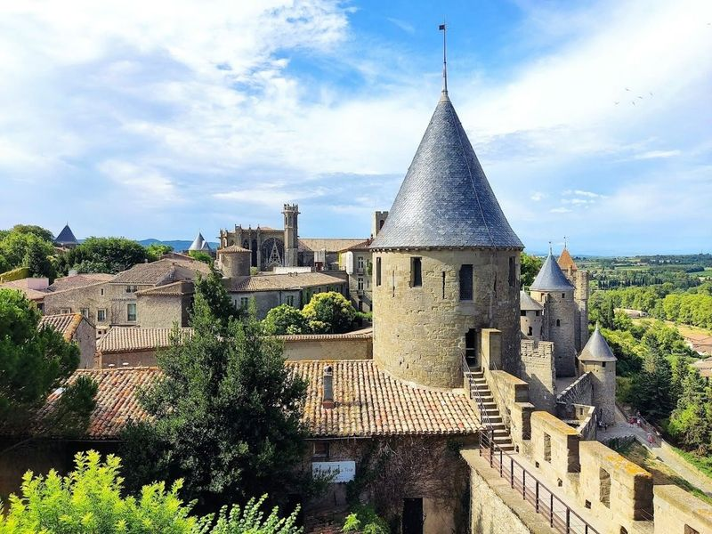
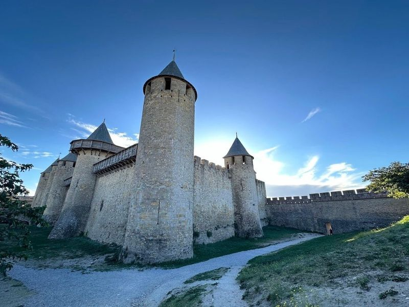
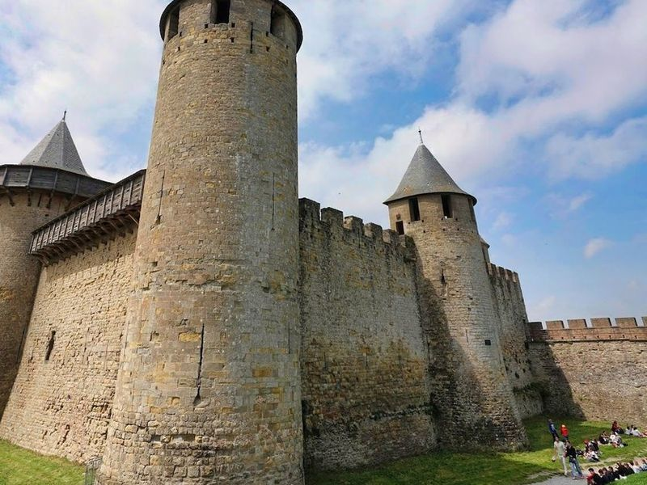
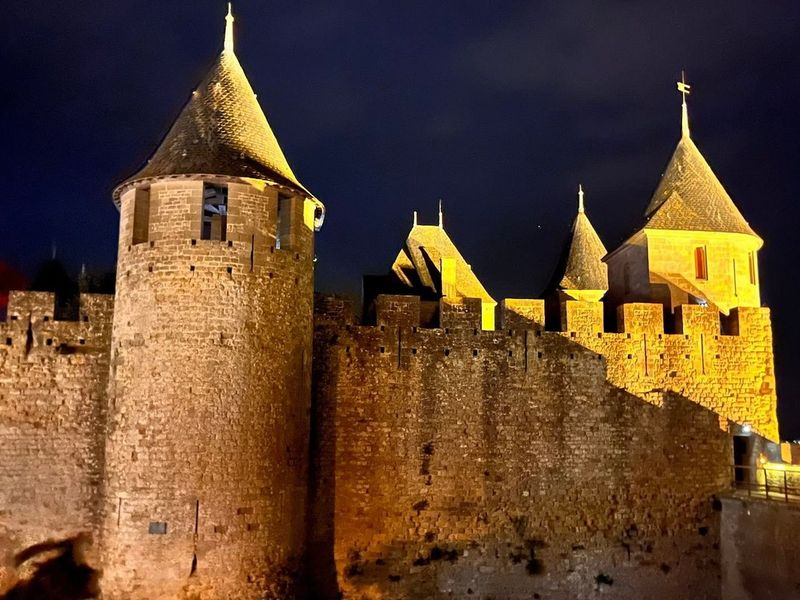
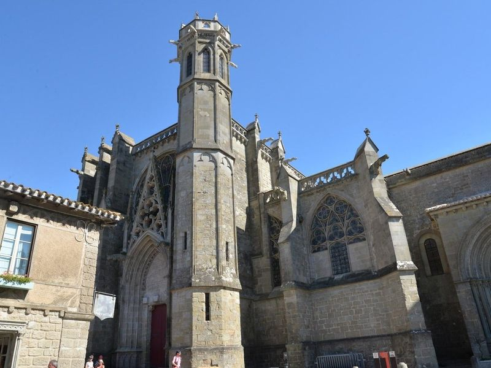
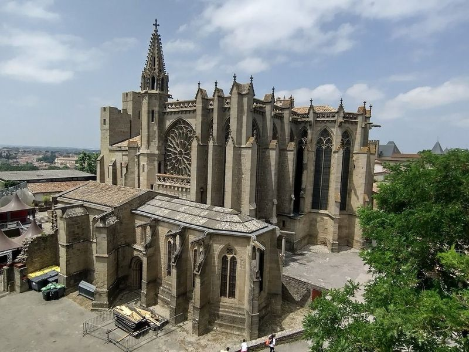
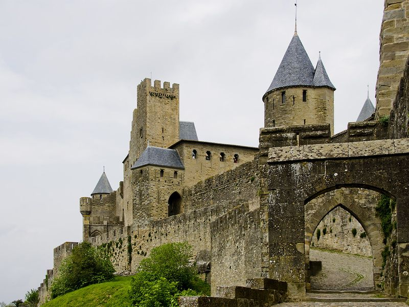
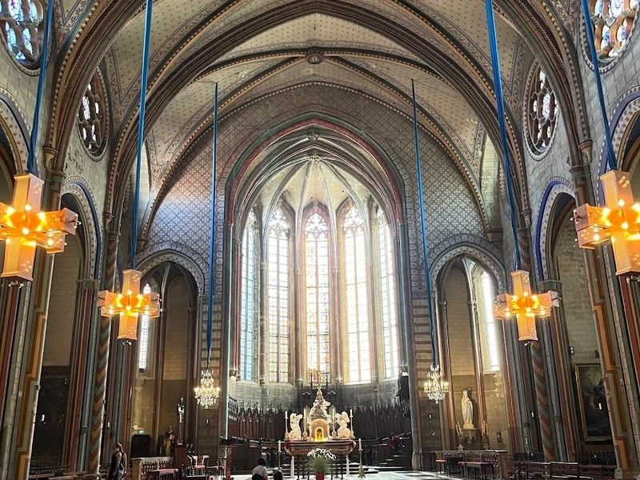
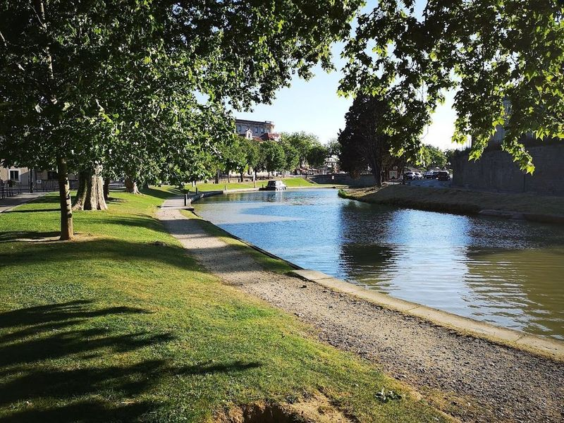
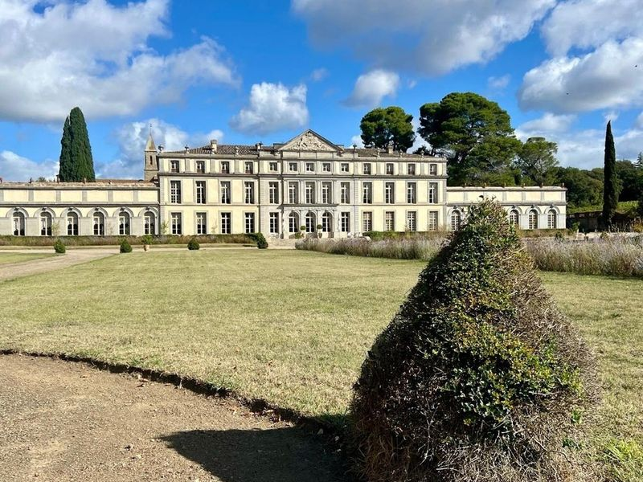

Explore Carcassonne
A Brief History
Carcassonne commands the Aude gap between the Massif Central and the Pyrenees, with double walls and fifty-two towers that Visigoths, Franks, and later counts of Toulouse expanded from late antiquity. Its role in Cathar resistance and the Albigensian Crusade fixed the fortress in French royal memory before trade shifted to the lower town. Nineteenth-century restoration by Viollet-le-Duc revived the citadel as an icon of medieval military architecture above vineyards of the Languedoc.
Attractions Map
Top Sights & Activities

Cité de Carcassonne
Cité de Carcassonne is a historic citadel with a rich history dating back to Gallo-Roman times. This UNESCO World Heritage site is renowned for its impressive double outer walls stretching over 3 kilometers and adorned with 52 defensive towers. travellers can enjoy views of the surrounding landscapes from the inner ramparts.

Château et remparts de la cité de Carcassonne
Château et remparts de la cité de Carcassonne is a must-visit in Carcassonne, France. The main attraction is the 12th-century chateau, which was originally built as the feudal castle of the Trencavel family and later became an important defensive position. The chateau has been heavily restored and now houses a museum displaying artifacts found in the Cité and its surrounding district.

Château Comtal
Château Comtal is a large 12th-century hilltop castle located in the medieval walled city of Carcassonne. It was the seat of the Trencavel family, Viscounts of Carcassonne, before being annexed by France in the 13th century. The castle now houses a museum where travellers can delve into the city's fascinating history.

Porte Narbonnaise
Porte Narbonnaise is a castle-like entrance gate that leads through massive stone walls into the medieval fortress city of Carcassonne in the south of France. It is and most fortresses globally, making it a must-visit for castle and medieval history enthusiasts. The gate serves as a portal to another world, evoking the rich history of the Cathars and the crusade against them in the Middle Ages.

Basilique Saint Nazaire
Basilique Saint Nazaire is a 12th-century church in Carcassonne, featuring a mix of Romanesque and Gothic architecture. The facade boasts a rose window, while the interior showcases exquisite stained glass and impressive stone carvings. The city of Carcassonne also includes other attractions like Le Musee International du Dessin Anime and Le Pont Vieux, offering views of the illuminated citadel at night.

Walls of Carcassonne
The Walls of Carcassonne are an impressive double defensive fortification that transformed the city into a formidable stronghold. The walls consist of various sections built over the years, allowing travellers to walk around and ascend to the ramparts for panoramic views. While access to the inner wall ramparts requires a ticket, exploring the outer walls is free and offers an enjoyable experience.

Carcassonne Castle Panorama View Point
This viewpoint offers panoramic views of the entire Carcassonne fortress and the surrounding countryside, used for photos and enjoying the scenery. The site is catalogued as a castle. The site is catalogued as a castle. The site is catalogued as a castle.

Saint Michael of Carcassonne
Saint Michael of Carcassonne is a striking 13th-century Catholic cathedral with fortress-like Gothic architecture. The cathedral boasts stained glass, captivating lighting, and intriguing chapels steeped in ancient history. It's recommended to visit early to avoid crowds and enjoy the peaceful atmosphere. While some areas may be under maintenance, the overall experience is still impressive.

Canal du Midi de Carcassonne
The Canal du Midi de Carcassonne is a UNESCO World Heritage site that dates back to the 17th century. It served as a vital waterway connecting France's Atlantic and Mediterranean coasts. The region, including Carcassonne, has inspired many artists and writers due to its rich history and picturesque landscapes. travellers can take boat rides along the canal, witnessing the impressive lock mechanisms in action while learning about its fascinating history through English translators.

Chateau de Pennautier
Chateau de Pennautier is a 17th-century estate and one of the six vineyards owned by the de Lorgerils family. The property features La Table, a restaurant offering daily menus paired with a variety of AOC wines, including the elegant local Cabardes. Situated just four miles from Carcassonne, the chateau boasts architecture and award-winning gardens that are used for leisurely strolls or picnics.